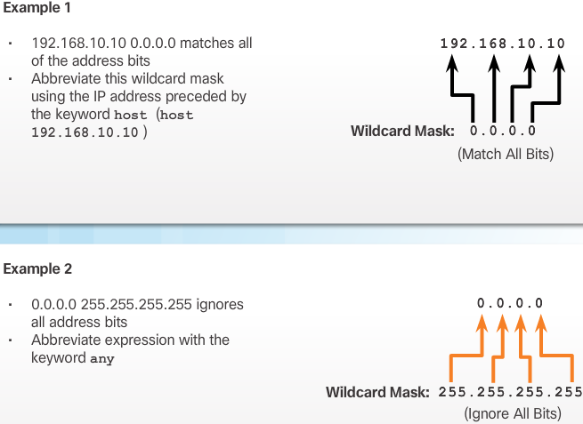
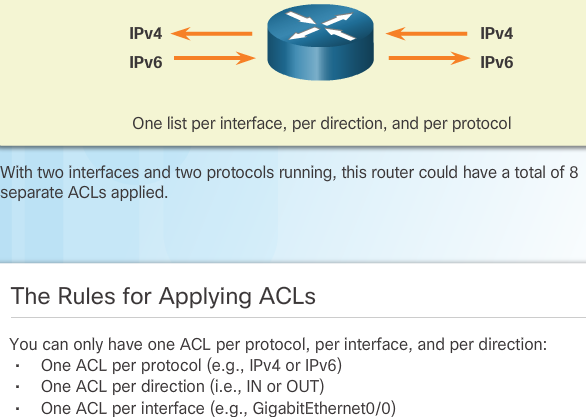
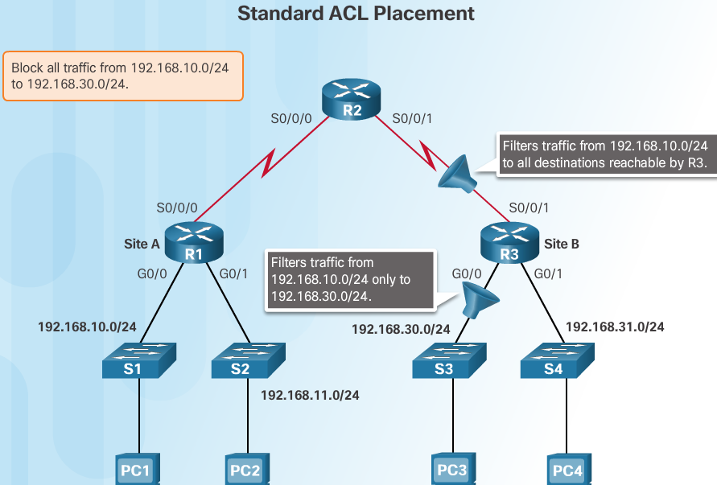
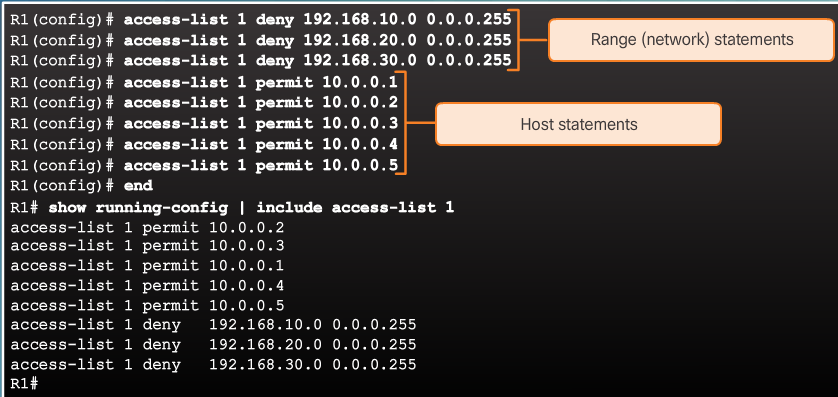

ACLs¶
When configured, ACLs perform the following tasks:
- Limit network traffic to increase network performance. For example, if corporate policy does not allow video traffic on the network, ACLs that block video traffic could be configured and applied. This would greatly reduce the network load and increase network performance.
- Provide traffic flow control. ACLs can restrict the delivery of routing updates to ensure that the updates are from a known source.
- Provide a basic level of security for network access. ACLs can allow one host to access a part of the network and prevent another host from accessing the same area. For example, access to the Human Resources network can be restricted to authorized users.
- Filter traffic based on traffic type. For example, an ACL can permit email traffic, but block all Telnet traffic.
- Screen hosts to permit or deny access to network services. ACLs can permit or deny a user to access file types, such as FTP or HTTP.
By default, a router does not have ACLs configured; therefore, by default a router does not filter traffic. Traffic that enters the router is routed solely based on information within the routing table. However, when an ACL is applied to an interface, the router performs the additional task of evaluating all network packets as they pass through the interface to determine if the packet can be forwarded.
In addition to either permitting or denying traffic, ACLs can be used for selecting types of traffic to be analyzed, forwarded, or processed in other ways. For example, ACLs can be used to classify traffic to enable priority processing.
An ACL is a sequential list of permit or deny statements, known as access control entries (ACEs). ACEs are also commonly called ACL statements. When network traffic passes through an interface configured with an ACL, the router compares the information within the packet against each ACE, in sequential order, to determine if the packet matches one of the ACEs. This process is called packet filtering.
Packet filtering controls access to a network by analyzing the incoming and outgoing packets and forwarding them or discarding them based on given criteria. Packet filtering can occur at Layer 3 or Layer 4.
Note
Standard ACLs only filter at Layer 3. Extended ACLs filter at Layer 3 and Layer 4.
Note: Extended ACLs are beyond the scope of this course.
ACL operation¶
The source IPv4 address is the filtering criteria set in each ACE of a standard IPv4 ACL. A router configured with a standard IPv4 ACL extracts the source IPv4 address from the packet header. The router starts at the top of the ACL and compares the address to each ACE sequentially. When a match is made, the router carries out the instruction, either permitting or denying the packet. After a match is made, the remaining ACEs in the ACL, if any are not analyzed.
If the source IPv4 address does not match any ACEs in the ACL, the packet is discarded.The last statement of an ACL is always an implicit deny. This statement is automatically inserted at the end of each ACL even though it is not physically present. The implicit deny blocks all traffic. Because of this implicit deny, an ACL that does not have at least one permit statement will block all traffic
ACLs define the set of rules that give added control for packets that enter inbound interfaces, packets that relay through the router, and packets that exit outbound interfaces of the router. ACLs do not act on packets that originate from the router itself.
ACLs can be configured to apply to inbound traffic and outbound traffic as shown in the figure.

Inbound ACLs Incoming packets are processed before they are routed to the outbound interface. An inbound ACL is efficient because it saves the overhead of routing lookups if the packet is discarded. If the packet is permitted by the ACL, it is then processed for routing. Inbound ACLs are best used to filter packets when the network attached to an inbound interface is the only source of packets that need to be examined. Outbound ACLs Incoming packets are routed to the outbound interface, and then they are processed through the outbound ACL. Outbound ACLs are best used when the same filter will be applied to packets coming from multiple inbound interfaces before exiting the same outbound interface.
R1# show access- lists
Standard IP access list 11
10 deny 192.168.10.0 0.0.0.255
20 permit any
The first line of the ACL prevent s any packets originating in the 192.168.10.0/24 network, which includes Internet Control Message Protocol (ICMP) echoe s (ping requests). The second line of the ACL allows all other ip traffic from any source to transverse the router.
Remove access list 11 from the configuration
Note
The no access-list command deletes all ACLs configured on the router . The no access-list # command removes only a specific ACL.
R1(config)# int se0/0/0
R1(config-if)# no ip access-group 11 out
R1(config)# no access-list 11
ACL Wildcard Masking¶
Note
0 means to match ip address bit - 1 means ignore address bit and zerofy
- write out ip in binary
- write WM in binary
- 0 match the address bit, 1 ignore address bit and put on 0
| Decimal Address | Binary Address | |
|---|---|---|
| IP to process | 192.168.10.0 | 11000000.10101000.00001010.00000000 |
| Wildcard Mask | 0.0.255.255 | 00000000.00000000.11111111.11111111 |
| Resulting IP | 192.168.0.0 | 11000000.10101000.00000000.00000000 |
Note
Unlike IPv4 ACLs, IPv6 ACLs do not use wildcard masks. Instead, the prefix-length is used to indicate how much of an IPv6 source or destination address should be matched
| Decimal | Binary | |
|---|---|---|
| IP Address | 192.168.16.0 | 11000000.10101000.00010000.00000000 |
| Wildcard Mask | 0.0.15.255 | 00000000.00000000.00001111.11111111 |
| Result Range | 192.168.16.0 | 11000000.10101000.00010000.00000000 |
| to | to | |
| 192.168.31.255 | 11000000.10101000.00011111.11111111 |
The first two octets and first four bits of the third octet must match exactly. The last four bits in the third octet and the last octet can be any valid number. This results in a mask that checks for the range of networks 192.168.16.0 to 192.168.31.0.
| Decimal | Binary | |
|---|---|---|
| IP Address | 192.168.1.0 | 11000000.10101000.00000001.00000000 |
| Wildcard Mask | 0.0.254.255 | 00000000.00000000.11111110.11111111 |
| Result | 192.168.1.0 | 11000000.10101000.00000001.00000000 |
| all odd numbered subnets |
a wildcard mask that matches the first two octets, and the least significant bit in the third octet. The last octet and the first seven bits in the third octet can be any valid number. The result is a mask that would permit or deny all hosts from odd subnets from the 192.168.0.0 major network.
calculate WM for 192.168.3.32/28 Permit nw access for the 14 users in the nw
| 255.255.255.255 | |
|---|---|
| (-) | 255.255.255.240 |
| 0.0.0.15 |
match only networks 192.168.10.0 and 192.168.11.0
| 255.255.255.255 | |
|---|---|
| (-) | 255.255.254.0 |
| 0.0.1.255 |
You could accomplish the same result with statements like the two shown below:
R1(config)# access-list 10 permit 192.168.10.0
R1(config)# access-list 10 permit 192.168.11.0
It is far more efficient to configure the wildcard mask in the following way
-------------------------------------------------
R1(config)# access-list 10 permit 192.168.10.0 0.0.1.255
Wildcard Mask Abbreviations¶
R1(config)# access-list 1 permit 0.0.0.0 255.255.255.255
!OR
R1(config)# access-list 1 permit any
R1(config)# access-list 1 permit 192.168.10.10 0.0.0.0
R1(config)# access-list 1 permit host 192.168.10.10
Rules for applying ACLs¶
Note
If we needed ACLs for both protocols, on both interfaces and in both directions, this would require eight separate ACLs. Each interface would have four ACLs; two ACLs for IPv4 and two ACLs for IPv6. For each protocol, one ACL is for inbound traffic and one for outbound traffic.
- Use ACLs in firewall routers positioned between your internal network and an external network such as the Internet.
- Use ACLs on a router positioned between two parts of your network to control traffic entering or exiting a specific part of your internal network.
- Configure ACLs on border routers, that is, routers situated at the edges of your networks. This provides a very basic buffer from the outside network, or between a less controlled area of your own network and a more sensitive area of your network.
- Configure ACLs for each network protocol configured on the border router interfaces.
- One ACL per protocol:
- To controll traffic flow on an interface an ACL must be defined for EACH Protocol enabled on the interface
- One ACL per direction:
- ACLs control traffic in one direction at a time on an interface. Two seperate ACLs must be created to control inbound & outbound traffic
- One ACL per interface:
- ACLs control traffic for an interface, eg. GigabitEthernet 0/0
Note
Test your ACLs on a development network before implementing them.
Note
Inbound ACLs, packets are processed before routing, Outbound ACLs after routing has performed
ACL Placement¶
Warning
Locate extended ACLs as close as possible to the source of the traffic to be filtered. This way, undesirable traffic is denied close to the source network without crossing the network infrastructure.
Warning
Because standard ACLs do not specify destination addresses, place them as close to the destination as possible. Placing a standard ACL at the source of the traffic will effectively prevent that traffic from reaching any other networks through the interface where the ACL is applied.
extended ACLs are placed as close as possible to the source and standard ACLs are placed as close as possible to the destination
- Placement of the ACL and therefore, the type of ACL used may also depend on
- The extent of the network administrator’s control:
- Placement of the ACL can depend on whether or not the network administrator has control of both the source and destination networks.
- Bandwidth of the networks involved:
- Filtering unwanted traffic at the source prevents transmission of the traffic before it consumes bandwidth on the path to a destination. This is especially important in low bandwidth networks.
- Ease of configuration:
- If a network administrator wants to deny traffic coming from several networks, one option is to use a single standard ACL on the router closest to the destination. The disadvantage is that traffic from these networks will use bandwidth unnecessarily. An extended ACL could be used on each router where the traffic originated. This will save bandwidth by filtering the traffic at the source but requires creating extended ACLs on multiple routers.
Standard ACL placement¶
- R3 S0/0/1 interface:
- Applying a standard ACL to prevent traffic from 192.168.10.0/24 from entering the S0/0/1 interface will prevent this traffic from reaching 192.168.30.0/24 and all other networks reachable by R3. This includes the 192.168.31.0/24 network. Because the intent of the ACL is to filter traffic destined only for 192.168.30.0/24, a standard ACL should not be applied to this interface.
- R3 G0/0 interface:
- Applying the standard ACL to traffic exiting the G0/0 interface will filter packets from 192.168.10.0/24 to 192.168.30.0/24. This will not affect other networks reachable by R3. Packets from 192.168.10.0/24 will still be able to reach 192.168.31.0/24.
Access-list: defines a standard ACL with a number in the range of 1 through 99
Router(config)# access-list 10 {deny | permit | remark} source [source-wildcard] [log]
R1(config)# access-list 10 permit 192.168.10.0 0.0.0.255
R1(config)# exit
R1# show access-lists
Standard IP access list 10
10 permit 192.168.10.0, wildcard bits 0.0.0.255
R1# conf t
R1(config)# no access-list 10
R1(config)# exit
R1(config)# show access-lists
R1#
use the ability to use remark
-----------------------------
R1(config)# access-list 10 remark Permit hosts from the 192.168.10.0 LAN
R1(config)# access-list 10 permit 192.168.10.0 0.0.0.255
R1(config)# exit
R1# show running-config | include access-list 10
access-list 10 remark Permit hosts from the 192.168.10.0 LAN
access-list 10 permit 192.168.10.0 0.0.0.255
R1#
Applying standard ipv4 ACLs to interface¶
- Router(config-if)# ip access-group { access-list-number | access-list-name } { in | out }
- to remove ACL from interface:
no ip access-group 10and thenno access-list 10
- create the entry: R1(config)# access-list 1 permit 192.168.10.0 0.0.0.255
- select the interface: R1(config)# interface serial 0/0/0
- activate on interface: R1(config-if)# ip access-group 1 out
R1(config)# no access-list 1
R1(config)# access-list 1 deny host 192.168.10.10
R1(config)# access-list 1 permit 192.168.10.0 0.0.0.255
R1(config)# interface **S0/0/0**
R1(config-if)# ip access-group 1 **out**
This is not very efficient, better to apply it to the inbound interface so the router doesn’t have to examine packets

R1(config)# no access-list 1
R1(config)# access-list 1 deny host 192.168.10.10
R1(config)# access-list 1 permit any
R1(config)# interface **g0/0**
R1(config-if)# ip access-group 1 **in**
Named Standard ACLs¶
Router(config)# ip access-list [standard | extended] name
Note
name must be unique and cannot begin with number
Router(config-std-nacl)# [permit | deny | remark] {source [source-wildcard]} [log]
Router(config-if)# ip access-group name [in | out]
- Activates the named IP ACL on an interface
R1(config)# ip access-list standard NO_ACCESS
R1(config-std-nacl)# deny host 192.168.11.10
R1(config-std-nacl)# permit any
R1(config-std-nacl)# exit
R1(config)# interface g0/0
R1(config-if)# ip access-group NO_ACCESS out
Note
mnemonics -> X to the source, X’ersource :) standard to destination = STD
exercises¶
PT Configuring Numbered Standard IPv4 ACLs¶
Addressing Table
| Device | Interface | IP Address | Subnet Mask | Default Gateway |
|---|---|---|---|---|
| R1 | G0/0 | 192.168.10.1 | 255.255.255.0 | N/A |
| G0/1 | 192.168.11.1 | 255.255.255.0 | N/A | |
| S0/0/0 | 10.1.1.1 | 255.255.255.252 | N/A | |
| S0/0/1 | 10.3.3.1 | 255.255.255.252 | N/A | |
| R2 | G0/0 | 192.168.20.1 | 255.255.255.0 | N/A |
| S0/0/0 | 10.1.1.2 | 255.255.255.252 | N/A | |
| S0/0/1 | 10.2.2.1 | 255.255.255.252 | N/A | |
| R3 | G0/0 | 192.168.30.1 | 255.255.255.0 | N/A |
| S0/0/0 | 10.3.3.2 | 255.255.255.252 | N/A | |
| S0/0/1 | 10.2.2.2 | 255.255.255.252 | N/A | |
| PC1 | NIC | 192.168.10.10 | 255.255.255.0 | 192.168.10.1 |
| PC2 | NIC | 192.168.11.10 | 255.255.255.0 | 192.168.11.1 |
| PC3 | NIC | 192.168.30.10 | 255.255.255.0 | 192.168.30.1 |
| WebServer | NIC | 192.168.20.254 | 255.255.255.0 | 192.168.20.1 |
Objectives * Part 1: Plan an ACL Implementation * Part 2: Configure, Apply, and verify a STanDard ACL
Scenario defining filtering criteria, configuring standard ACLs, applying ACLs to router interfaces, and verifying and testing the ACL implementation. The routers are already configured, including IP addresses and Enhanced Interior Gateway Routing Protocol (EIGRP) routing.
Verify full connectivity before applying ACLs
apply following policies on R2
- The 192.168.11.0/24 network is not allowed access to the WebServer on the 192.168.20.0/24 network.
- All other access is permitted
R2(config)# access-list 1 deny 192.168.11.0 0.0.0.255 R2(config)# access-list 1 permit any R2(config)# interface G0/0 R2(config-if)# ip access-group 1 out
apply following policies on R3
- The 192.168.10.0/24 network is not allowed to communicate with the 192.168.30.0/24 network
- All other access is permitted
R3(config)#do show access-list R3(config)#access-list 1 deny 192.168.10.0 0.0.0.255 R3(config)#access-list 1 permit any R3(config)#interface g0/0 R3(config-if)#ip access-group 1 out
Use the
show access-list&show runorshow ip interface gigabitethernet 0/0command to verify ACL placementstime to ping around to see what succeeds and fails
- A ping from 192.168.10.10 to 192.168.11.10 succeeds.
- A ping from 192.168.10.10 to 192.168.20.254 succeeds.
- A ping from 192.168.11.10 to 192.168.20.254 fails.
- A ping from 192.168.10.10 to 192.168.30.10 fails.
- A ping from 192.168.11.10 to 192.168.30.10 succeeds.
- A ping from 192.168.30.10 to 192.168.20.254 succeeds.
PT Configuring Named Standard IPv4 ACLs¶
| Device | Interface | IP Address | Subnet Mask | Default Gateway |
|---|---|---|---|---|
| R1 | F0/0 | 192.168.10.1 | 255.255.255.0 | N/A |
| R1 | F0/1 | 192.168.20.1 | 255.255.255.0 | N/A |
| R1 | E0/0/0 | 192.168.100.1 | 255.255.255.0 | N/A |
| R1 | E0/1/0 | 192.168.200.1 | 255.255.255.0 | N/A |
| File Server | NIC | 192.168.200.100 | 255.255.255.0 | 192.168.200.1 |
| WebServer | NIC | 192.168.100.100 | 255.255.255.0 | 192.168.100.1 |
| PC0 | NIC | 192.168.20.3 | 255.255.255.0 | 192.168.20.1 |
| PC1 | NIC | 192.168.20.4 | 255.255.255.0 | 192.168.20.1 |
| PC2 | NIC | 192.168.10.3 | 255.255.255.0 | 192.168.10.1 |
solution:
R1#show access-list
R1#show ip access-lists
R1(config)#ip access-list standard File_Server_Restrictions
R1(config-std-nacl)#permit host 192.168.20.4
R1(config-std-nacl)#deny any
R1(config-std-nacl)#?
<1-2147483647> Sequence Number
default Set a command to its defaults
deny Specify packets to reject
exit Exit from access-list configuration mode
no Negate a command or set its defaults
permit Specify packets to forward
remark Access list entry comment
R1(config-std-nacl)#do show access-list
Standard IP access list File_Server_Restrictions
10 permit host 192.168.20.4
20 deny any
R1(config-std-nacl)#do show ip access-list
Standard IP access list File_Server_Restrictions
10 permit host 192.168.20.4
20 deny any
Note
@ this point no difference is noticable between show or show ip access-list
Note
the answer: There may be more than just IPv4 access-lists on the router. If so, the command show access-lists would show them all, including IPX or other types that may exist. On that same router, the command show ip access-lists would only show the IP access-lists, and not the IPX or other types.
Lab Config/Mod Std IPv4 ACLs¶

| Device | Interface | IP Address | Subnet Mask | Default Gateway |
|---|---|---|---|---|
| R1 | G0/1 | 192.168.10.1 | 255.255.255.0 | N/A |
| Lo0 | 192.168.20.1 | 255.255.255.0 | N/A | |
| S0/0/0 (DCE) | 10.1.1.1 | 255.255.255.252 | N/A | |
| ISP | S0/0/0 | 10.1.1.2 | 255.255.255.252 | N/A |
| S0/0/1 (DCE) | 10.2.2.2 | 255.255.255.252 | N/A | |
| Lo0 | 209.165.200.225 | 255.255.255.224 | N/A | |
| R3 | G0/1 | 192.168.30.1 | 255.255.255.0 | N/A |
| Lo0 | 192.168.40.1 | 255.255.255.0 | N/A | |
| S0/0/1 | 10.2.2.1 | 255.255.255.252 | N/A | |
| S1 | VLAN 1 | 192.168.10.11 | 255.255.255.0 | 192.168.10.1 |
| S3 | VLAN 1 | 192.168.30.11 | 255.255.255.0 | 192.168.30.1 |
| PC-A | NIC | 192.168.10.3 | 255.255.255.0 | 192.168.10.1 |
| PC-C | NIC | 192.168.30.3 | 255.255.255.0 | 192.168.30.1 |
- Configure IP addresses on PC-A and PC-C
- configure basic settings for routers
Console into router and enter global config
copy following and paste it to the running config
no ip domain-lookup hostname R1 service password-encryption enable secret class banner motd # Unauthorized access is strictly prohibited. # Line con 0 password cisco login logging synchronous line vty 0 4 password cisco loginConfigure the device name as shown in the topology.
Create loopback interfaces on each router as shown in the Addressing Table.
Configure interface IP addresses as shown in the Topology and Addressing Table.
Assign a clock rate of 128000 to the DCE serial interfaces.
Enable Telnet access.
Copy the running configuration to the startup configuration.
(optional)Configure basics on the switches
Console into switch and enter global config mode
Copy the following and paste it into the running config
no ip domain-lookup service password-encryption enable secret class banner motd # Unauthorized access is strictly prohibited. # Line con 0 password cisco login logging synchronous line vty 0 15 password cisco login exit
Configure the device name as shown in the topology.
Configure the management interface IP address as shown in the Topology and Addressing Table.
Configure a default gateway.
Enable Telnet access.
Copy the running configuration to the startup configuration.
Configure RIP routing on R1, ISP and R3
Configure RIP version 2 and advertise all networks on R1, ISP, and R3. The OSPF configuration for R1 and ISP is included for reference.
R1(config)# router rip R1(config-router)# version 2 R1(config-router)# network 192.168.10.0 R1(config-router)# network 192.168.20.0 R1(config-router)# network 10.1.1.0 ISP(config)# router rip ISP(config-router)# version 2 ISP(config-router)# network 209.165.200.224 ISP(config-router)# network 10.1.1.0 ISP(config-router)# network 10.2.2.0
After configuring Rip on R1, ISP, and R3, verify that all routers have complete routing tables, listing all networks. Troubleshoot if this is not the case.
Verify connectivity between devices.
Note
It is very important to test whether connectivity is working before you configure and apply access lists!
- From PC-A, ping PC-C and the loopback interface on R3. Were your pings successful?
- From R1, ping PC-C and the loopback interface on R3. Were your pings successful?
- From PC-C, ping PC-A and the loopback interface on R1. Were your pings successful?
- From R3, ping PC-A and the loopback interface on R1. Were your pings successful?
Configure numbered standard ACL
Standard ACLs filter traffic based on the source IP address only. A typical best practice for standard ACLs is to configure and apply it as close to the destination as possible. For the first access list, create a standard numbered ACL that allows traffic from all hosts on the 192.168.10.0/24 network and all hosts on the 192.168.20.0/24 network to access all hosts on the 192.168.30.0/24 network.
The security policy also states that a deny any access control entry (ACE), also referred to as an ACL statement, should be present at the end of all ACLs. What wildcard mask would you use to allow all hosts on the 192.168.10.0/24 network to access the 192.168.30.0/24 network?
Following Cisco’s recommended best practices, on which router would you place this ACL? On which interface would you place this ACL? In what direction would you apply it?
Configure the ACL on R3. Use 1 for the access list number.
R3(config)# access-list 1 remark Allow R1 LANs Access R3(config)# access-list 1 permit 192.168.10.0 0.0.0.255 R3(config)# access-list 1 permit 192.168.20.0 0.0.0.255 R3(config)# access-list 1 deny any
Apply the ACL to the appropriate interface in the proper direction.
R3(config)# interface g0/1 R3(config-if)# ip access-group 1 out
Verify a numbered ACL. The use of varios show commands can aid you in verifying both the syntax and placement of your ACLs in your router. To see access list 1 in its entirety with all ACEs, which command would you use?
On R3, issue the
show access-lists 1command.R3# show access-list 1 Standard IP access list 1 10 permit 192.168.10.0, wildcard bits 0.0.0.255 20 permit 192.168.20.0, wildcard bits 0.0.0.255 30 deny any
On R3, issue the
show ip interface g0/1command.R3# show ip interface g0/1 GigabitEthernet0/1 is up, line protocol is up Internet address is 192.168.30.1/24 Broadcast address is 255.255.255.255 Address determined by non-volatile memory MTU is 1500 bytes Helper address is not set Directed broadcast forwarding is disabled Multicast reserved groups joined: 224.0.0.10 Outgoing access list is 1 Inbound access list is not set Output omitted
Test the ACL to see if it allows traffic from the 192.168.10.0/24 network access to the 192.168.30.0/24 network. From the PC-A command prompt, ping the PC-C IP address. Were the pings successful?
Test the ACL to see if it allows traffic from the 192.168.20.0/24 network access to the 192.168.30.0/24 network. You must do an extended ping and use the loopback 0 address on R1 as your source. Ping PC-C’s IP address. Were the pings successful?
R1# ping Protocol [ip]: Target IP address: 192.168.30.3 Repeat count [5]: Datagram size [100]: Timeout in seconds [2]: Extended commands [n]: y Source address or interface: 192.168.20.1 Type of service [0]: Set DF bit in IP header? [no]: Validate reply data? [no]: Data pattern [0xABCD]: Loose, Strict, Record, Timestamp, Verbose[none]: Sweep range of sizes [n]: Type escape sequence to abort. Sending 5, 100-byte ICMP Echos to 192.168.30.3, timeout is 2 seconds: Packet sent with a source address of 192.168.20.1 !!!!! Success rate is 100 percent (5/5), round-trip min/avg/max = 28/29/32 ms
- From the R1 prompt, ping PC-C’s IP address again.
R1# ping 192.168.30.3Was the ping successful? Why or why not?
- From the R1 prompt, ping PC-C’s IP address again.
Configure a named standard ACL. Create a named standard ACL that conforms to the following policy: allow traffic from all hosts on the 192.168.40.0/24 network access to all hosts on the 192.168.10.0/24 network. Also, only allow host PC-C access to the 192.168.10.0/24 network. The name of this access list should be called BRANCH-OFFICE-POLICY. Following Cisco’s recommended best practices, on which router would you place this ACL? On which interface would you place this ACL? In what direction would you apply it?
Create the standard named ACL BRANCH-OFFICE-POLICY on R1.
R1(config)# ip access-list standard BRANCH-OFFICE-POLICY R1(config-std-nacl)# permit host 192.168.30.3 R1(config-std-nacl)# permit 192.168.40.0 0.0.0.255 R1(config-std-nacl)# end R1# Feb 15 15:56:55.707: %SYS-5-CONFIG_I: Configured from console by console
Looking at the first permit ACE in the access list, what is another way to write this?
Apply the ACL to the appropriate interface in the proper direction.
R1# config t R1(config)# interface g0/1 R1(config-if)# ip access-group BRANCH-OFFICE-POLICY out
Verify a named ACL.
On R1, issue the show access-lists command.
R1# show access-lists Standard IP access list BRANCH-OFFICE-POLICY 10 permit 192.168.30.3 20 permit 192.168.40.0, wildcard bits 0.0.0.255
Is there any difference between this ACL on R1 with the ACL on R3? If so, what is it?
On R1, issue the
show ip interface g0/1command.R1# show ip interface g0/1 GigabitEthernet0/1 is up, line protocol is up Internet address is 192.168.10.1/24 Broadcast address is 255.255.255.255 Address determined by non-volatile memory MTU is 1500 bytes Helper address is not set Directed broadcast forwarding is disabled Multicast reserved groups joined: 224.0.0.10 Outgoing access list is BRANCH-OFFICE-POLICY Inbound access list is not set <Output omitted>
Test the ACL. From the command prompt on PC-C, ping PC-A’s IP address. Were the pingssuccessful?
Test the ACL to ensure that only the PC-C host is allowed access to the 192.168.10.0/24 network. You must do an extended ping and use the G0/1 address on R3 as your source. Ping PC-A’s IP address. Were the pings successful?
Test the ACL to see if it allows traffic from the 192.168.40.0/24 network access to the 192.168.10.0/24 network. You must perform an extended ping and use the loopback 0 address on R3 as your source. Ping PC-A’s IP address. Were the pings successful?
Management has decided that users from the 209.165.200.224/27 network should be allowed full access to the 192.168.10.0/24 network. Management also wants ACLs on all of their router s to follow consistent rules. A deny any ACE should be placed at the end of all ACLs. You must modify the BRANCH-OFFICE-POLICY ACL. You will add two additional lines to this ACL. There are two ways you could do this:
OPTION 1: Issue a no ip access-list standard BRANCH-OFFICE-POLICY command in global configuration mode. This would effectively take the whole ACL out of the router. Depending upon the router IOS, one of the following scenarios would occur:
all filtering of packets would be cancelled and all packets would be allowed through the router; or, because you did not take off the ip access-group command on the G0/1 interface, filtering is still in place. Regardless, when the ACL is gone, you could retype the whole ACL, or cut and paste it in from a text editor.
OPTION 2: You can modify ACLs in place by adding or deleting specific lines within the ACL itself. This can come in handy, especially with ACLs that have many lines of code. The retyping of the whole ACL or cutting and pasting can easily lead to errors. Modifying specific lines within the ACL is easily accomplished. For this lab, use Option 2.
From R1 privileged EXEC mode, issue a show access-lists command.
R1# show access-lists Standard IP access list BRANCH-OFFICE-POLICY 10 permit 192.168.30.3 (8 matches) 20 permit 192.168.40.0, wildcard bits 0.0.0.255 (5 matches)
Add two additional lines at the end of the ACL. From global config mode, modify the ACL, BRANCH-OFFICE-POLICY.
R1#(config)# ip access-list standard BRANCH-OFFICE-POLICY R1(config-std-nacl)# 30 permit 209.165.200.224 0.0.0.31 R1(config-std-nacl)# 40 deny any R1(config-std-nacl)# end
Verify the ACL.
On R1, issue the show access-lists command.
R1# show access-lists Standard IP access list BRANCH-OFFICE-POLICY 10 permit 192.168.30.3 (8 matches) 20 permit 192.168.40.0, wildcard bits 0.0.0.255 (5 matches) 30 permit 209.165.200.224, wildcard bits 0.0.0.31 40 deny any
Do you have to apply the BRANCH-OFFICE-POLICY to the G0/1 interface on R1?
From the ISP command prompt, issue an extended ping. Test the ACL to see if it allows traffic from the 209.165.200.224/27 network access to the 192.168.10.0/24 network. You must do an extended ping and use the loopback 0 address on ISP as your source. Ping PC-A’s IP address. Were the pings successful?
Reflection 1. As you can see, standard ACLs are very powerful and work quite well. Why would you ever have the need for using extended ACLs? 2. Typically, more typing is required when using a named ACL as opposed to a numbered ACL. Why would you choose named ACLs over numbered?
Editing Numbered ACLs¶
Method 1 - Use a Text Editor¶
After someone is familiar with creating and editing ACLs, it may be easier to construct the ACL using a text editor such as Microsoft Notepad. This allows you to create or edit the ACL and then paste it into the router interface. For an existing ACL, you can use the show running-config command to display the ACL, copy and paste it into the text editor, make the necessary changes, and paste it back in to the router interface.
Configuration: For example, assume that the host IPv4 address in the figure was incorrectly entered. Instead of the 192.168.10.99 host, it should have been the 192.168.10.10 host. Here are the steps to edit and correct ACL 1:
- Display the ACL using the show running-config command. The example in the figure uses the include keyword to display only the ACEs.
- Highlight the ACL, copy it, and then paste it into a Notepad. Edit the list as required. After the ACL is correctly displayed in Notepad, highlight it and copy it.
Step 3. In global configuration mode, remove the access list using the no access-list 1 command. Otherwise, the new statements would be appended to the existing ACL. Then paste the new ACL into the configuration of the router.
Step 4. Using the show running-config command, verify the changes
Warning
when using the no access-list command, different IOS software releases act differently. If the ACL that has been deleted is still applied to an interface, some IOS versions act as if no ACL is protecting your network while others deny all traffic
Note
For this reason it is good practice to remove the reference to the access list from the interface before modifying the access list. If there is an error in the new list, disable it and troubleshoot the problem. In that instance, the network has no ACL during the correction process.
Method 2 - Use Sequence Numbers¶
goto acl
--------
R1(config) ip access-list standard 1
fix line
--------
R1(config-std-nacl)# no 10
R1(config-std-nacl)# 10 deny host 192.168.10.10
verify
------
R1# show access-lists
R1# show running-config | include access-list 1
Note
Cisco IOS implements an internal logic to standard access lists. The order in which standard ACEs are entered may not be the order in which they are stored, displayed or processed by the router. The show access-lists command displays the ACEs with their sequence numbers.
adding a line to NACL¶
R1#show access-lists
R1(config) ip access-list standard NAME_OF_ACCESS_LIST
R1(config-if-nacl)# 15 deny host 192.168.11.11
R1(config-if-nacl)# end
verifying standard ACL interfaces¶
R1# show ip interface s0/0/0
Outgoing access list is 1 Inbound access list is not set
R1# show ip interface g0/0
Outgoing access list is NO_ACCESS Inbound access list is not set
R1# show access-lists
ACL VS IP ACL¶
The access-list command is used to define a numbered ACL, meaning that the ACL will be identified in the configuration by its number. This number also designates the type of this ACL, i.e. standard IP, extended IP, MAC, etc. See here:
Router(config)#access-list ?
<1-99> IP standard access list
<100-199> IP extended access list
<1100-1199> Extended 48-bit MAC address access list
<1300-1999> IP standard access list (expanded range)
<200-299> Protocol type-code access list
<2000-2699> IP extended access list (expanded range)
<700-799> 48-bit MAC address access list
Following this help output, if you want to define a standard IP ACL, it has to be identified by a number in the range 1-99 or 1300-1999. Analogously, if you want to define an extended IP ACL, it must be numbered from the range 100-199 or 2000-2699. MAC ACLs would use the range 700-799 for standard ACL and 1100-1199 for extended ACL.
The ip access-list command defines a named IPv4 ACL, either standard or extended. A named IP ACL is totally equivalent to a numbered IP ACL in its behavior - the only difference is in the way it is configured and referenced in the configuration. Also, using the ip access-list command, you can not define different types of ACLs like MAC ACLs. Otherwise, a named and a numbered ACLs behave identically.
For example, these two ACLs would provide identical results:
access-list 1 deny host 192.0.2.4
access-list 1 deny 192.0.2.128 0.0.0.127
access-list 1 permit any
ip access-list standard MyACL1
deny host 192.0.2.4
deny 192.0.2.128 0.0.0.127
permit any
Also, these two ACLs would provide identical results:
access-list 100 permit tcp any any eq 80
access-list 100 permit tcp any any eq 443
access-list 100 permit udp any host 192.0.2.1 eq 53
ip access-list extended MyACL2
permit tcp any any eq 80
permit tcp any any eq 443
permit udp any host 192.0.2.1 eq 53
Apart from the obvious advantage of giving ACLs meaningful names instead of just numbers, the named ACLs have another advantage: they can actually be edited. Numbered ACLs cannot really be edited - you can only add new entries to their end but if you need to remove or replace an entry, you need to remove the entire ACL and enter it anew. With named ACLs, it is actually possible to perform in-place editing.
Let’s take the last named ACL posted. If you perform show ip access-lists you will get the following output:
Router#show ip access-lists
Extended IP access list MyACL2
10 permit tcp any any eq www
20 permit tcp any any eq 443
30 permit udp any host 192.0.2.1 eq domain
Note the numbers 10,20,30 at the each line. They allow you to remove that particular line or insert a new line between them. For example, if I wanted to insert a new rule between the first and second entry, it would be done as follows: ch7_named_acl_ipv4_pt.pn .. code:
ip access-list extended MyACL2
15 permit tcp any any eq 110
Now the show ip access-lists would say:
Extended IP access list MyACL2
10 permit tcp any any eq www
15 permit tcp any any eq pop3
20 permit tcp any any eq 443
30 permit udp any host 192.0.2.1 eq domain
I could use any number bch7_named_acl_ipv4_pt.pnetween 11 and 19, inclusive.
Now, if I wanted to remove the line 30 (the one permitting the DNS access), the command would be:
ip access-list extended MyACL2
no 30
The show ip access-lists would now produce:
Extended IP access list MyACL2
10 permit tcp any any eq www
15 permit tcp any any eq pop3
20 permit tcp any any eq 443
These numbers are not really stored in the configuration - they are only runtime-remembered. If you restart the router, they will be reset again to 10,20,30,etc. In case you need to resequence the ACL without restarting the router, you can use the command ip access-list resequence MyACL2 10 10 where the first “10” number specifies the starting number of the ACL entry, and the second “10” represents the increment. After entering this command in the global configuration mode, the show ip access-lists again shows:
Extended IP access list MyACL2
10 permit tcp any any eq www
20 permit tcp any any eq pop3
30 permit tcp any any eq 443
So to wrap it up, numbered ACLs and named ACLs defined using the ip access-list command have the same effect. However, the named ACLs are more flexible in the way they are defined, managed and referenced.
Clearing ACL Statistics¶
R1# clear access-list counters 1 or clear access-list counters ACL_NAME
Accesss-class command¶
The access-class command configured in line configuration mode restricts incoming and outgoing connections between a particular VTY (into a Cisco device) and the addresses in an access list.
The command syntax of the access-class command is:
Router(config-line)# access-class access-list-number { in [ vrf-also ] | out }
The parameter in restricts incoming connections between the addresses in the access list and the Cisco device, while the parameter out restricts outgoing connections between a particular Cisco device and the addresses in the access list.
The following should be considered when configuring access lists on VTYs:
Both named and numbered access lists can be applied to VTYs. Identical restrictions should be set on all the VTYs, because a user can attempt to connect to any of them.
Note
Access lists apply to packets that travel through a router. They are not designed to block packets that originate within the router. By default, an outbound ACL does not prevent remote access connections initiated from the router.
R1(config)# line vty 0 15
R1(config-line)# login local
R1(config-line)# transport input ssh
R1(config-line)# access-class 21 in
R1(config-line)# exit
R1(config)# access-list 21 permit 192.168.10.0 0.0.0.255
R1(config)# access-list 21 deny any
The implicit Deny Any¶
A single-entry ACL with only one deny entry has the effect of denying all traffic. At least one permit ACE must be configured in an ACL or all traffic is blocked.
For the network in the figure, applying either ACL 1 or ACL 2 to the S0/0/0 interface of R1 in the outbound direction will have the same effect. Network 192.168.10.0 will be permitted to access the networks reachable through S0/0/0, while 192.168.11.0 will not be allowed to access those networks. In ACL 1, if a packet does not match the permit statement, it is discarded.

ACL 1
R1(config)# access-list 1 permit 192.168.10.0 0.0.0.255
ACL 2
R1(config)# access-list 2 permit 192.168.10.0 0.0.0.255
R1(config)# access-list 2 deny any
The order of ACEs in an ACL¶
R1(config)# access-list 3 deny 192.168.10.0 0.0.0.255
R1(config)# access-list 3 permit host 192.168.10.10
% Access rule can't be configured at higher sequence num as it is part of the existing rule at sequence num 10
ACL 3 Host statement conflicts with previous range statement
R1(config)# access-list 4 permit host 192.168.10.10
R1(config)# access-list 4 deny 192.168.10.0 0.0.0.255
ACL 4 .. note:: Host statement can always be configured before range statements
ACL 5
R1(config)# access-list 5 deny 192.168.10.0 0.0.0.255
R1(config)# access-list 5 permit host 192.168.11.10
Host statement can be configured if there’s no conflict
Sequencing considerations during configuration¶

The order in which the standard ACEs are listed is the sequence used by the IOS to process the list. Notice that the statements are grouped into two sections, host statements followed by range statements. The sequence number indicates the order that the statement was entered, not the order the statement will be processed.
The host statements are listed first but not necessarily in the order that they were entered. The IOS puts host statements in an order using a special hashing function. The resulting order optimizes the search for a host ACL entry. The range statements are displayed after the host statements. These statements are listed in the order in which they were entered.
Note
The hashing function is only applied to host statements in an IPv4 standard access list.
Recall that standard and numbered ACLs can be edited using sequence numbers. When inserting a new ACL statement, the sequence number will only affect the location of a range statement in the list. Host statements will always be put in order using the hashing function.
ACL and Routing Processes¶
open in new tab to view properly

When a packet arrives at a router interface, the router process is the same, whether ACLs are used or not. As a frame enters an interface, the router checks to see whether the destination Layer 2 address matches its interface Layer 2 address, or whether the frame is a broadcast frame.
If the frame address is accepted, the frame information is stripped off and the router checks for an ACL on the inbound interface. If an ACL exists, the packet is tested against the statements in the list.
If the packet matches a statement, the packet is either permitted or denied. If the packet is accepted, it is then checked against routing table entries to determine the destination interface. If a routing table entry exists for the destination, the packet is then switched to the outgoing interface, otherwise the packet is dropped.
Next, the router checks whether the outgoing interface has an ACL. If an ACL exists, the packet is tested against the statements in the list.
If the packet matches a statement, it is either permitted or denied.
If there is no ACL or the packet is permitted, the packet is encapsulated in the new Layer 2 protocol and forwarded out the interface to the next device.
Troubleshooting StD IPv4 ACLs¶
show access-listR1# show run | section interfaceR1# show run | section line vtyR1(config)# ip access-list standard PC1-SSHfollowed byR1(config-std-nacl)# no 10followed by correctionR1(config-std-nacl)# 10 permit host 192.168.10.10R1# clear access-list countersto only show new matches
check access-list
check if access-list is applied to the correct interface
R1# conf t R1(config)# interface g0/1 R1(config-if)# no ip access-group 20 in R1(config-if)# interface g0/0 R1(config-if)# ip access-group 20 out
check if access-list is applied via access-class on vty’s
Exercices¶
PT Troubleshooting StD IPv4 ACLs¶
- Policy:
- Hosts from the 192.168.0.0/24 network are unable to access network 10.0.0.0/8.
- L3 can’t access any devices in network 192.168.0.0/24.
- L3 can’t access Server1 or Server2. L3 should only access Server3.
- Hosts from the 172.16.0.0/16 network have full access to Server1, Server2 and Server3.
given: interface GigabitEthernet0/0
ip address 10.0.0.1 255.0.0.0
ip access-group FROM_10 in
duplex auto
speed auto
!
interface GigabitEthernet0/1
ip address 172.16.0.1 255.255.0.0
ip access-group FROM_172 in
duplex auto
speed auto
!
interface GigabitEthernet0/2
ip address 192.168.0.1 255.255.255.0
duplex auto
speed auto
!
interface Vlan1
no ip address
shutdown
!
ip classless
!
ip flow-export version 9
!
!
ip access-list standard FROM_192
deny 192.168.0.0 0.0.0.255
permit any
ip access-list standard FROM_10
deny host 10.0.0.22
permit any
ip access-list standard FROM_172
deny host 172.16.0.2
permit any
!
|
solution: interface GigabitEthernet0/0
ip address 10.0.0.1 255.0.0.0
ip access-group FROM_10 in
ip access-group FROM_192 out
duplex auto
speed auto
!
interface GigabitEthernet0/1
ip address 172.16.0.1 255.255.0.0
ip access-group FROM_172 in
duplex auto
speed auto
!
interface GigabitEthernet0/2
ip address 192.168.0.1 255.255.255.0
duplex auto
speed auto
!
interface Vlan1
no ip address
shutdown
!
ip classless
!
ip flow-export version 9
!
!
ip access-list standard FROM_192
deny 192.168.0.0 0.0.0.255
permit any
ip access-list standard FROM_10
deny host 10.0.0.2
permit any
ip access-list standard FROM_172
!
|
PT Ch7 Skills Integration Challenge¶
| Device | Interface | IP Address | Subnet Mask | Default Gateway |
|---|---|---|---|---|
HQServer HQ2
|
G0/0 | 172.16.127.254 | 255.255.192.0 | N/A |
| G0/1 | 172.16.63.254 | 255.255.192.0 | N/A | |
| S0/0/0 | 192.168.0.1 | 255.255.255.252 | N/A | |
| S0/0/1 | 64.104.34.2 | 255.255.255.252 | 64.104.34.1 | |
BranchServer,B2
|
G0/0 | 172.16.159.254 | 255.255.240.0 | N/A |
| G0/1 | 172.16.143.254 | 255.255.240.0 | N/A | |
| S0/0/0 | 192.168.0.2 | 255.255.255.252 | N/A | |
| HQ1 | NIC | 172.16.64.1 | 255.255.192.0 | 172.16.127.254 |
| HQ2 | NIC | 172.16.0.2 | 255.255.192.0 | 172.16.63.254 |
| HQServer.pka | NIC | 172.16.0.1 | 255.255.192.0 | 172.16.63.254 |
| B1 | NIC | 172.16.144.1 | 255.255.240.0 | 172.16.159.254 |
| B2 | NIC | 172.16.128.2 | 255.255.240.0 | 172.16.143.254 |
| BranchServer.pka | NIC | 172.16.128.1 | 255.255.240.0 | 172.16.143.254 |

Configure HQ & Branch with RIPv2 routing:
Advertise all three attached networks. Do not advertise the link to the internet.
Configure appropriate interfaces as passive
HQ(config)#router rip HQ(config-router)#version 2 HQ(config-router)#network 172.16.0.0 HQ(config-router)#network 192.168.0.0 HQ(config-router)#passive-interface GigabitEthernet 0/1 HQ(config-router)#passive-interface GigabitEthernet 0/0 HQ(config-router)#passive-interface Serial 0/0/1 Branch>enable Branch#conf t Branch(config)#router rip Branch(config-router)#version 2 Branch(config-router)#passive-interface GigabitEthernet 0/0 Branch(config-router)#passive-interface GigabitEthernet 0/1 Branch(config-router)#no auto-summary
Note
By default routing protocol like RIP and EIGRP summarize subnets into major classful network at classful boundary. In other word, these protocols perform an auto-summarization each time they crosses a border between two different major networks. To disable this behavior and advertise subnets, ‘no auto-summary’ command is used. Let’s say router has two subnets 172.16.8.0/24 and 172.16.4.0/24 of Class B network and one subnet 10.2.0.0/16 of Class A. When auto-summary is enabled, router will advertise only summarized major classful network 172.16.0.0/16.
Set a default route on HQ that directs traffic to S0/0/1 interface. Redistribute the route to Branch.
HQ(config)#ip route 0.0.0.0 0.0.0.0 Serial 0/0/1 %Default route without gateway, if not a point-to-point interface, may impact performance HQ(config)#router rip HQ(config-router)#default-information originate
design NACL HQServer to prevent any pc’s attached to Branch G0/1 from accessing HQServer.pka. All other traffic is permitted. Configure on appropriate router, apply it to the appropriate interface and in the appropriate direction.
HQ(config)#ip access-list standard HQServer HQ(config-std-nacl)#deny 172.16.128.0 0.0.15.255 HQ(config-std-nacl)#permit any HQ(config-std-nacl)#exit HQ(config)#interface GigabitEthernet 0/1 HQ(config-if)#ip access-group HQServer out
design NACL BranchServer to prevent any pc’s attached to HQ G0/0 from accessing the Branch server. All other traffic is permitted. Configure access list on appropriate router,interface,direction.
HQ(config)#ip access-list standard BranchServer HQ(config-std-nacl)#deny 172.16.64.0 0.0.63.255 HQ(config-std-nacl)#permit any HQ(config-std-nacl)#exit HQ(config)#interface GigabitEthernet 0/1 HQ(config-if)#ip access-group BranchServer
HQ: interface GigabitEthernet0/0
ip address 172.16.127.254 255.255.192.0
duplex auto
speed auto
!
interface GigabitEthernet0/1
ip address 172.16.63.254 255.255.192.0
ip access-group HQServer out
duplex auto
speed auto
!
interface GigabitEthernet0/2
no ip address
duplex auto
speed auto
shutdown
!
interface Serial0/0/0
ip address 192.168.0.1 255.255.255.252
clock rate 2000000
!
interface Serial0/0/1
description link_ISP
ip address 64.104.34.2 255.255.255.252
!
interface Vlan1
no ip address
shutdown
!
router rip
version 2
passive-interface GigabitEthernet0/0
passive-interface GigabitEthernet0/1
passive-interface Serial0/0/1
network 172.16.0.0
network 192.168.0.0
default-information originate
no auto-summary
!
ip classless
ip route 0.0.0.0 0.0.0.0 Serial0/0/1
!
ip flow-export version 9
!
!
ip access-list standard BranchServer
deny 172.16.64.0 0.0.63.255
permit any
ip access-list standard HQServer
deny 172.16.144.0 0.0.15.255
permit any
!
|
Branch: interface GigabitEthernet0/0
ip address 172.16.159.254 255.255.240.0
duplex auto
speed auto
!
interface GigabitEthernet0/1
ip address 172.16.143.254 255.255.240.0
ip access-group BranchServer out
duplex auto
speed auto
!
interface GigabitEthernet0/2
no ip address
duplex auto
speed auto
shutdown
!
interface Serial0/0/0
ip address 192.168.0.2 255.255.255.252
!
interface Serial0/0/1
no ip address
clock rate 2000000
!
interface Vlan1
no ip address
shutdown
!
router rip
version 2
passive-interface GigabitEthernet0/0
passive-interface GigabitEthernet0/1
no auto-summary
!
ip classless
!
ip flow-export version 9
!
!
ip access-list standard BranchServer
deny 172.16.64.0 0.0.63.255
permit any
|
using debugging to see update entries: router#debug ip rip
HQ#debug ip ?
eigrp IP-EIGRP information
icmp ICMP transactions
nat NAT events
ospf OSPF information
packet Packet information
rip RIP protocol transactions
routing Routing table events
HQ#debug ipv6 ?
dhcp IPv6 DHCP debugging
inspect Stateful inspection events
nd IPv6 Neighbor Discovery debugging
ospf OSPF information
---------------
HQ#debug ip rip
---------------
RIP: sending v2 update to 224.0.0.9 via Serial0/0/0 (192.168.0.1)
RIP: build update entries
0.0.0.0/0 via 0.0.0.0, metric 1, tag 0
172.16.0.0/18 via 0.0.0.0, metric 1, tag 0
172.16.64.0/18 via 0.0.0.0, metric 1, tag 0
Chapter 7 exam¶
| device name | interface | ipaddress/submask | gateway |
|---|---|---|---|
| Atom | Gi0/0.20 | 172.16.20.0/24 | 172.16.20.254 |
| Gi0/0.40 | 172.16.40.0/24 | 172.16.40.254 | |
| Gi0/0.60 | 172.16.60.0/24 | 172.16.60.254 | |
| Gi0/0.88 | 172.16.88.0/24 | 172.16.88.254 | |
| Gi0/1.250 | 172.16.250.0/24 | 172.16.250.254 | |
| Gi0/1.254 | 172.16.254.0/24 | 172.16.254.254 | |
| Neutron | SVI | 172.16.88.101/24 | 172.16.88.254 |
| Proton | SVI | 172.16.88.102/24 | 172.16.88.254 |
| Electron | SVI | 172.16.88.103/24 | 172.16.88.254 |
| Lab 1 | NIC | 172.16.20.10/24 | 172.16.20.254 |
| Research 1 | NIC | 172.16.40.10/24 | 172.16.40.254 |
| Prod 1 | NIC | 172.16.60.10/24 | 172.16.60.254 |
| Lab 2 | NIC | 172.16.20.20/24 | 172.16.20.254 |
| Research 2 | NIC | 172.16.40.20/24 | 172.16.40.254 |
| Prod 2 | NIC | 172.16.60.20/24 | 172.16.60.254 |
| DNS Server | NIC | 172.16.254.252 | 172.16.254.254 |
| VLAN Number | VLAN Name | Device/Ports |
|---|---|---|
| 20 | Lab | Proton: Fa0/1 - Fa0/5 |
| Electron: Fa0/1 - Fa0/5 | ||
| 40 | Research | Proton: Fa0/6 - Fa0/10 |
| Electron: Fa0/6 - Fa0/10 | ||
| 60 | Production | Proton: Fa0/11 - Fa0/15 |
| Electron: Fa0/11 - Fa0/15 | ||
| 88 | NetOps | Neutron: SVI |
| Proton: SVI | ||
| Electron: SVI |
solution on router Atom
commands used on the switches
interface range FastEthernet 0/23 - 24
switchport mode trunk
switchport trunk allowed vlan 20,40,60,88
interface GigabitEthernet 0/1
switchport mode trunk
switchport trunk allowed vlan 20,40,60,88
interface range FastEthernet 0/1 - 22
switchport mode access
interface vlan 88
ip address 171.16.88.101 255.255.255.0
no shutdown
interface range FastEthernet 0/1 - 5
switchport access vlan 20
no shutdown
interface range FastEthernet 0/6 - 10
switchport access vlan 40
no shutdown
interface range FastEthernet 0/11 - 15
switchport access vlan 60
no shutdown
vtp domain School
vtp version 2
vtp mode client
don’t forget to configure the gateway for switches and ip address for mgmt vlan on every switch
- make sure you apply ACL on subinterface
Network:[[R1name]]:Ports:GigabitEthernet0/1.250:Access-group Out
Router configuration
Atom#show run
Building configuration...
Current configuration : 1841 bytes
!
version 15.1
no service timestamps log datetime msec
no service timestamps debug datetime msec
service password-encryption
!
hostname Atom
!
enable secret 5 $1$mERr$hx5rVt7rPNoS4wqbXKX7m0
!
!
!
no ip cef
no ipv6 cef
!
!
!
!
no ip domain-lookup
!
!spanning-tree mode pvst
!
!
!
interface GigabitEthernet0/0
no ip address
duplex auto
speed auto
!
interface GigabitEthernet0/0.20
encapsulation dot1Q 20
ip address 172.16.20.254 255.255.255.0
!
interface GigabitEthernet0/0.40
encapsulation dot1Q 40
ip address 172.16.40.254 255.255.255.0
!
interface GigabitEthernet0/0.60
encapsulation dot1Q 60
ip address 172.16.60.254 255.255.255.0
!
interface GigabitEthernet0/0.88
encapsulation dot1Q 88
ip address 172.16.88.254 255.255.255.0
!
interface GigabitEthernet0/1
no ip address
duplex auto
speed auto
!
interface GigabitEthernet0/1.250
encapsulation dot1Q 250
ip address 172.16.250.254 255.255.255.0
ip access-group INT-WEB out
!
interface GigabitEthernet0/1.254
encapsulation dot1Q 254
ip address 172.16.254.254 255.255.255.0
!
interface Serial0/0/0
ip address 209.165.200.226 255.255.255.252
!
interface Serial0/0/1
no ip address
clock rate 2000000
shutdown
!
interface Vlan1
no ip address
shutdown
!
ip classless
ip route 0.0.0.0 0.0.0.0 209.165.200.225
!
ip flow-export version 9
!
!
access-list 10 permit 172.16.60.0 0.0.0.255
ip access-list standard INT-WEB
permit 172.16.40.0 0.0.0.255
permit 172.16.60.0 0.0.0.255
remark allow Research and Production VLANs to reach www.int.com
!
!
!
line con 0
exec-timeout 180 0
password 7 0822455D0A16
logging synchronous
login
!
line aux 0
!
line vty 0 4
access-class 10 in
password 7 0822455D0A16
login
line vty 5 15
access-class 10 in
password 7 0822455D0A16
login
!
!
!
end
Ch7 QnA¶
- ACL:
- a method of controlling packet flow
- ACE:
- one line in an ACL
- Standard ACL:
- IP-based ACLs that can be numbered 1 to 99
- ip access-group:
- a command that is used to apply a standard ACL to an interface
- access-class:
- a command that is used to apply a standard ACL to one or more VTY ports
- goes to next ACE:
- the action taken when the criteria specified in an ACE does not match
- 0.0.0.31:
- wildcard mask for a /27 network
- match the address bit value:
- the purpose of a zero in a wildcard mask
- closest to destination:
- the common placement location for a standard ACL
- one:
- the number of IP-based ACLs that can be applied to one router interface in the inbound direction
- easy to modify:
- an advantage of using a named ACL
- host:
- the common keyword that is used when only one IP address is to be matched
- any:
- the keyword that is the same as using an address of 0.0.0.0 255.255.255.255
- permit or deny:
- the actions that can be taken when a router matches an address in an ACE
- Which scenario would cause an ACL misconfiguration and deny all traffic?
- Apply an ACL that has all deny ACE statements
- Which type of standard ACL is easiest to modify on a production router?
- A named ACL that has not been applied yet
- Two common reasons for having a named ACL are
- its function is easier to identify the ACL is easier to modify
- ACLs can be used for the following:
- Limit network traffic in order to provide adequate network performance
- Restrict the delivery of routing updates
- Provide a basic level of security
- Filter traffic based on the type of traffic being sent
- Filter traffic based on IP addressing
Warning
The R1(config)# no access-list # command removes the ACL from the running-config immediately. HOWEVER, to disable an ACL on an interface, the command R1(config-if)# no ip access-group should be entered.
- If a router has two interfaces and is routing both IPv4 and IPv6 traffic, how many ACLs could be created and applied to it?
- 3P rule: 1 ACL per Protocol, 1 per Direction, 1 per Interface (PDI). In this case 2 interfaces x 2 protocols x 2 directions = 8